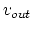
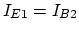
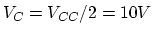

- Problem 1. (20 points)
Find the output voltage  in both (a) and (b) as a logic function of
the three input voltages
in both (a) and (b) as a logic function of
the three input voltages  ,
,  and , each of which could be either
0V or 5V, as listed in the following tables. Assume the voltage drop across
a conducting diode is
and , each of which could be either
0V or 5V, as listed in the following tables. Assume the voltage drop across
a conducting diode is  .
.

- Problem 2. (40 points)
The circuit below shows an NPN transistor circuit where ,
 , , , ,
, and . As always, we assume
, , , ,
, and . As always, we assume  when
the transistor is conducting.
when
the transistor is conducting.

- Find the DC operating point in terms of
 ,
,  , and ,
together with
, and ,
together with  , and (voltages at the three transistor
terminals with respect to ground).
, and (voltages at the three transistor
terminals with respect to ground).
- Find the AC small signal equivalent circuit, assuming
and the frequency of the AC signal is high enough so that all capacitors
can be treated as AC short circuit. Find the AC voltage gain defined as the
ratio between  and
 . For simplicity, assume the voltage
source has no internal resistance and no load
. For simplicity, assume the voltage
source has no internal resistance and no load  .
.
- Find the input resistance (defined as the ratio of the input voltage
and the input current
 ) and the output resistance. Based on
the expression of the input resistance, explain why is needed (not
by-passed by the emitter capacitor).
) and the output resistance. Based on
the expression of the input resistance, explain why is needed (not
by-passed by the emitter capacitor).
- Problem 3. (40 points)
The circuit shown below is a simple Darlington transistor amplifier which is
composed of two transistors and  with their collectors connected
and the emitter of connected to the base of . Assume
and both transistors have
with their collectors connected
and the emitter of connected to the base of . Assume
and both transistors have  .
.
- Give the expressions of , ,
 ,
,  all in terms of
all in terms of  and .
and .
- Given , find so that
. For
simplicity, assume for both transistors
 .
.